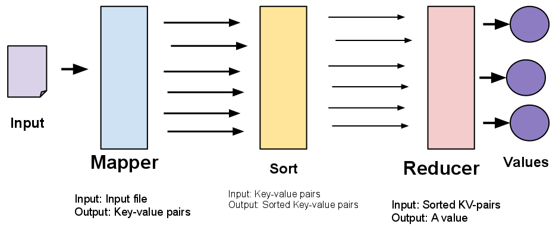
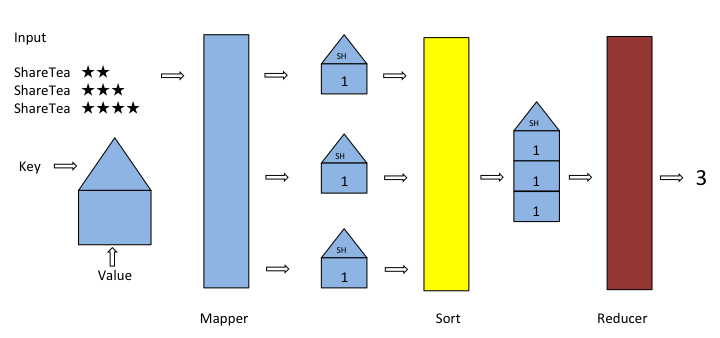

Lab 10: Spark
Due at 11:59pm on 04/29/2016.
Starter Files
Download lab10.zip. Inside the archive, you will find starter files for the questions in this lab, along with a copy of the OK autograder.
Submission
By the end of this lab, you should have submitted the lab with
python3 ok --submit. You may submit more than once before the
deadline; only the final submission will be graded.
- To receive credit for this lab, you must complete Questions 1-3 in the Databricks Spark platform.
- After completing each question on Databricks, copy a token into lab10.py.
- After finishing the lab, submit as usual.
MapReduce
In this lab, we'll be working with MapReduce, a programming paradigm developed by Google, which allows a programmer to process large amounts of data in parallel on many computers. We will use Apache Spark to write our MapReduce application.
A MapReduce application consists two components: the mapper and the reducer.
- The mapper takes an input file and returns a list of key-value pairs.
- The reducer takes an iterable over all values for a common key and outputs a single value.
The following diagram summarizes the entire MapReduce pipeline:

Example: Counting Reviews
In this lab, we will be revisiting the Maps project by analyzing the Yelp academic dataset.
Let's take a look at how we could count the number of reviews
for a particular restaurant. Intuitively, if we are given a giant list
of restaurant reviews in the format (restaurant_name, review), we would
just loop over the list and increase the restaurant restaurant_name's' count by 1
(perhaps in a dictionary mapping restaurant_names to a count). When we reach
the end of the list, we will have processed every review and tallied up the
number of reviews for each restaurant.
To formulate this as a MapReduce problem, we need to define an
appropriate mapper and reducer function.
What should the mapper do? For each (restaurant_name, review) tuple,
the mapper outputs a key-value pair. What should our key-value pairs be for
our review counting example?
- key: We want to uniquely identify each review. We could use the restaurant name contained in each review.
- value: We want to count each review exactly once. Thus, our value can just be the number 1.
For example, the mapper will take in an input file like:
("ShareTea", "2 stars for sharetea...")
("ShareTea", "I love sharetea!")
("UCafe", "I prefer sharetea!")
("OCha", "I like sharetea better :)")
("ShareTea", "Sharetea is great")
("OCha", "ocha is pretty great too. their tea is awesome!")It then outputs a sequence of key-value pairs like this:
'ShareTea' 1
'ShareTea' 1
'UCafe' 1
'OCha' 1
'ShareTea' 1
'OCha' 1The reducer takes this sequence and simply adds up all the values that are associated with each key:
'ShareTea' 3
'UCafe' 1
'OCha' 2A simple example of three reviews for ShareTea is illustrated by the following diagram:

You will see this example in action as Question 0 when you load up the Databricks server.
Apache Spark and Databricks
Spark is a framework that builds on MapReduce. The AMPLab (here at Cal!) first developed this framework to improve an open source implementation of MapReduce that ran on Hadoop. In this lab, we will run Spark on the Databricks platfrom, which will demonstrate how you can write programs that can harness parallel processing on Big Data.
Databricks is a company that was founded out of UC Berkeley by the creators of Spark. They have been generous enough to donate computing resources for the entire class to write Spark code in Databricks notebooks. A Databricks notebook is very similar to an IPython notebook, which you all have had experience with in Data 8.
Getting Started
To create a Databricks Community Edition account, visit this spreadsheet here, find your name, and sign up for an account with the link associated with your name.
Setting up Your Workspace
After activating your account, you will see a toolbar on the left. To grab the files,
- Press Workspace
- Press the down arrow OR right-click on the Workspace bar that slided out
- Select "Import"
- Drag-and-drop the lab10.dbc file that was included in lab10.zip
- Get started on Q0!
For questions 1-3, once you complete the questions and pass the tests, copy the token that is shown in the last cell into your lab10.py. Make sure the token is a string.
Creating a Cluster
If your notebook says "Detached" (on the top left), you should attach a cluster. If no cluster exists, then you should create one with the name "cs88".
To create a cluster, click on "Detached" and then click "Create a Cluster". Enter in "cs88" for the Cluster Name. Then click the blue "Create Cluster" button.
The cluster may take a few minutes to spin up and get ready.